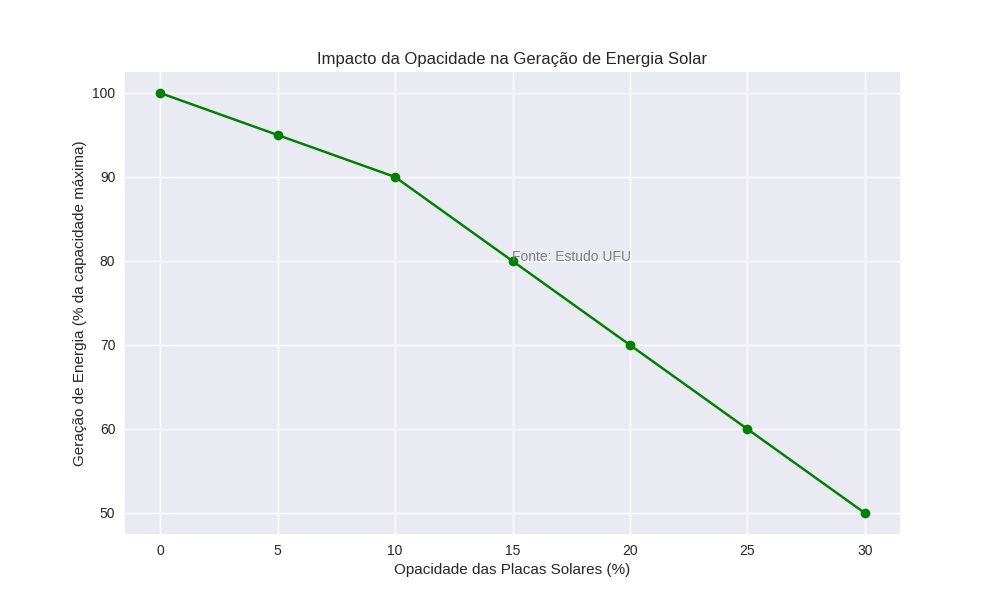
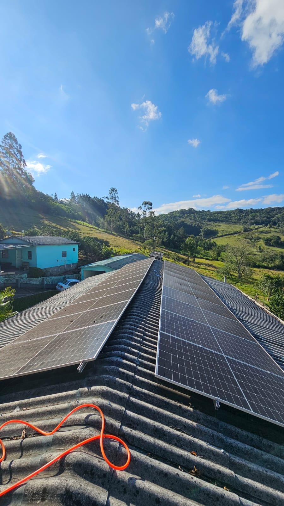

Poeira, fuligem e excrementos reduzem drasticamente a captação. A SNDLimp resolve isso.
Mas quando foi a última vez que inspecionou a superfície dos painéis? A diferença entre uma placa limpa e uma suja pode chegar a 25% de perda — e esse rombo cresce todo mês.

🏠 Residência com 12 placas → Até R$600/mês perdidos
🏭 Empresa com 60 placas → Até R$3.000/mês evaporando
O "payback" do seu investimento está sendo alongado sem você perceber.

Usamos equipamento profissional, produtos biodegradáveis e técnica que não risca, não mancha e não danifica o vidro antirreflexo dos seus módulos. Limpeza feita por quem entende de geração.
Resultado: eficiência restaurada em até 98% logo após a limpeza.
Nada de esponjas ásperas ou produtos caseiros. Cuidamos do seu investimento.
Antes e depois para você ter certeza do serviço.
Em poucas horas seu sistema volta a produzir no máximo.